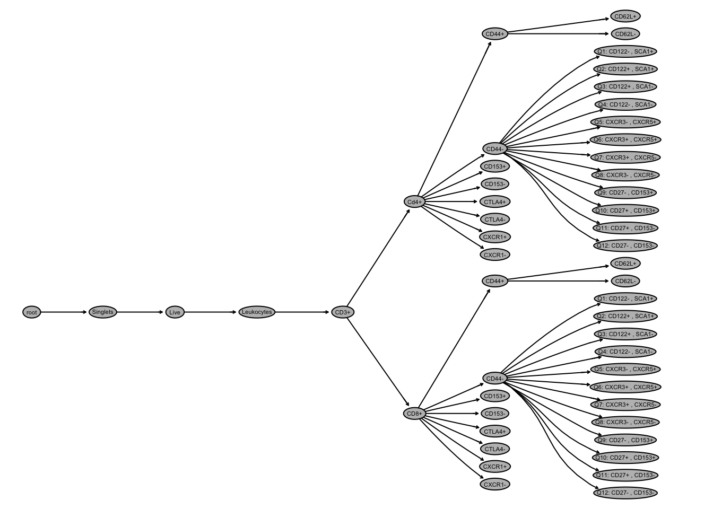

Chapter 3 Working with your Manual Gating Scheme
The first step in this process is to bring a pre-existing flowJo file into R to recreate the gating environment. This chapter will detail the following:
- Read in flowJo .wsp file
- Parse FCS files
- Visualize and verify manual gates
3.1 Read in flowJo file
Within flowJo, tranformation, compensation, and gating can be saved as either .xml or .wsp filetypes. This tutorial will only detail steps from a .wsp filetype saved from flowJo. Note that many other tutorials begin from a .xml filetype. Saving analysis within flowJo is detailed here.
Your .wsp file will contain cell samples and groups to be added to the Workspace in R. The R Workspace is where all gates, analyses, and compensation matrices applied to samples within flowJo will be replicated and can be added to other samples in R. Importantly, the .wsp will not contain your FCS files. Rather, the path to your files will be saved within the .wsp and will be referenced later in R.
Before you begin, be sure you have loaded the required packages outlined in the previous chapter.
Once all packages are loaded, save the .wsp filetype path as an R object. Here, it is called wsfile, but you can name your R objects in any way. Next, use the openWorkspace() function with your R object created in the prior step to open the .wsp file in R. Save this as a new R object of any name. Here it is named ws. This new R object will be of flowJoWorkspace class.
Here is an example of saving and opening your .wsp filetype in R. Please ensure that ws is saved as a flowWorkspace object containing groups of samples before proceeding. This can be verified by looking in the Environment tab in the upper right pane of your screen. Next to each saved R object will list the class that the object is saved as.
wsfile <- "../tutorial/group1_v_group2.wsp"ws <- openWorkspace(wsfile)print(ws)## FlowJo Workspace Version 20.0
## File location: ../tutorial
## File name: group1_v_group2.wsp
## Workspace is open.
##
## Groups in Workspace
## Name Num.Samples
## 1 All Samples 10
## 2 Samples 103.2 Parse FCS files
The next step is to read in raw FCS files. FCS files contain data from the flow cytometer. Standards for FCS files are listed here.
Raw FCS files are read using the parseWorkspace() function. This function will read the FCS files and transform, compensate, and gate according to parameters defined from the .wsp flowJo workspace, which is now saved as an R object of class flowWorkspace. The parseWorkspace() call requires the object that results from running openWorkspace(). Here, we named this object ws. The function parseWorkspace() also requires the name of the samples to read in. To list sample names, use the getSampleGroups() function on your flowWorkspace class object. You can then choose the sample names based on the results of getSampleGroups()
A new R object, here named gating_set, is then created and will be a GatingSet object. The isNcdf = TRUE call saves this output to disk rather that into memory because the FCS files are large. The sampNloc = 'sampleNode' tells R where to retrieve the FCS file names. The options for sampNloc can be either “keyword” or “sampleNode”.
Here is an example of parsing FCS files. As this function runs, you will see several messages appear as the FCS files are loaded and the manual gating scheme is replicated. After this, attributes() is used to examine the data.
gating_set <- parseWorkspace(ws, name = "Samples",
path = "../tutorial/group1_v_group2",
isNcdf = TRUE, sampNloc = 'sampleNode')## windows version of flowJo workspace recognized.
## version Xattributes(gating_set)3.3 Visualize and Verify
It is helpful to now visualize both the gating template and gates on a subset of the data in order to verify the gating scheme. This will ensure consistency between the flowJo workspace and the manual gates recreated in R. First, save a subset of the GatingSet object type, here named gating_set. The following saves the first FCS file of gating_set as gh, which will be a GatingHierarchy object type. Since each FCS file corresponds to an individual experiment, this saves the first experiment of the group.
gh <- gating_set[[1]]
print(gh)## Sample: X_group1_1
## GatingHierarchy with 51 gates3.3.1 plot()
The plot() function will visualize the current gating hierarchy when applied to an object of class GatingHierarchy. This can be done for the entire gating hierarchy or a specific population as seen below.
plot(gh)
3.3.2 plotGate()
The plotGate() function will gate the designated subset of your data according to parameters replicated from flowJo. This must be called on an object of class GatingHierarchy.
flowWorkspace.par.set("plotGate", list(xlim = "data",
ylim = "data"))
plotGate(gh, xbin = 128)**Note the use of flowWorkspace.par.set() and xbin here. Chapter 5 of this tutorial will discuss these plot customizations.